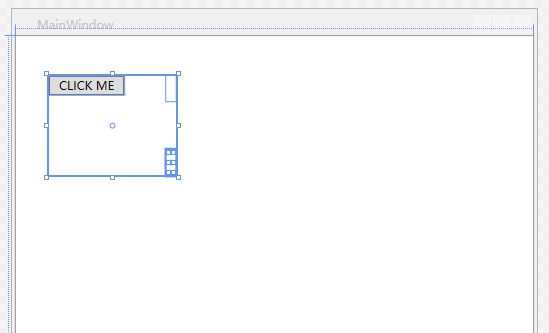

状态：完结
最新更新：20170806
备注：此课程为C#入门课程，作为UWP开发入门课程的先修基础课程。
第一讲 课程介绍
内容简介
主题简介，了解课程预期效果，相关软件下载等准备工作。
VisualStudio 2017下载地址 ：https://www.visualstudio.com/zh-hans/thank-you-downloading-visual-studio/?sku=Community&rel=15
对于VisualStudio 2017安装过程中Windows 10 SDK 安装失败的情况，可以直接下载单独的SDK文件单独安装（安装时候需要退出VisualStudio 2017）。SDK百度云：链接: http://pan.baidu.com/s/1o8x8hXS 密码: vycy
第二讲 创建你的第一个C#程序
内容简介
- 学习如何创建一个简单的应用程序，并获取针对您在开始编写和编译代码时可能会遇到的不同问题的常用解决方案的说明。
简记
- 编程中各种括号区分()、{}、[]、<>
- 编程易错点：大小写、中英文符号使用错误、符号使用没有配对、没有以分号结尾……
- 要思考的点：1.为什么那样做、做了什么、表象之下发生了什么。2.编程语法规则。
第三讲 了解你的第一个 C# 程序
内容简介
- 为了从较高层面更好地了解 C# 语法，请返回到我们刚刚创建的程序，以便拆分每个关键字和符号。
简记
第四讲 使用代码文件、项目和解决方案
内容简介
了解如何打开和关闭项目中的各个文件、项目和解决方案之间的关系，等等。
简记
- Solution Explore 解决方案资源管理器
- 当前项目位置:文档（Documents）\Visual Studio（当前使用的版本）\Projects\
- bin 文件夹为 binary 缩写，表示是二进制执行文件存储文件夹
- Debug 文件夹调试应用程序时创建的文件夹，程序创建了一个临时版本的应用程序来进行调试
评估
- 方法: 一个命名的代码块，你可以通过调用其名称来调用/执行它
- 源代码的编译结果称为：.NET 程序集
- .NET Framework 运行时（CLR）的用途为：它是你的程序在……内运行的内容，可保护用户免受恶意代码的侵害，并处理内存管理和其他运行时任务
第五讲 了解数据类型和变量
内容简介
- 通过浏览基本构造块，向您的词汇表添加 C# 语法︰数据类型和变量。此外，还了解基本主题（例如命名约定和数据类型转换）。
简记
- variable 变量
- Console.WriteLine()和Console.Write()区别：Console.WriteLine()和Console.Write()都是System.Console提供的方法，都是用来输出的。Console.WriteLine()是把要输出的字符串与换行符一起输出，会输出完毕后将光标移到下一行，而Console.Write()不会换行。
- Ctrl + . 更改某个变量后，可以通过此快捷键批量更改同名变量
- 驼峰式命名法：第一个单词小写，后续单词的首字母大写
- 让变量名更具描述性与辨识性： 不能对同一个变量定义两次、不要重复使用变量名称（只改改大小写）、遵循命名约定。
- 合理使用intellisense(智能提示)
第六讲 if判定语句
内容简介
- 获得 if 判定语句以及条件运算符的简介。找出如何重构代码以使其更紧凑且不太可能会产生错误。
简记
- 范围、在特定范围内部声明变量：本质上说，在一个内部范围内（如一个if语句内部）定义一个变量时，该变量在这个范围之外不可用。换言之，如果我们在一个代码块内部，或一个花括号内部，定义一个变量，则它只在这对花括号内有用，在这对花括号以外不可用。
- 替换代码 {0}
课堂代码
1 | using System; |
第七讲 运算符、表达式和语句
内容简介
- 了解如何创建格式正确的 C# 语句(由包含运算符和操作数的表达式组成)。了解在忽略 C# 的语法规则时出现的编译错误。
简记
- 操作数、运算符、表达式
- 对象、类、变量
- 运算符： +加、-减、*乘、/除
- 逻辑运算符： and 与、|| 或
- Console是一个“类”，而“类”是“容器”，缺少对方法的一个更强大的定义。访问一个类或一个对象的成员方法的方式就是使用英文的 . 符号，此为成员访问运算符。
- 方法调用运算符，如通过()符号调用一个名为 WriteLine 的方法
评估
- 表达式由哪几项组成: 操作数和运算符
- 语句由哪项组成：表达式
第八讲 for迭代语句
简介
- 了解几种不同类型的迭代语句，如何利用“代码段”帮助提示您此复杂语句的语法，并进行调试。
简记
- for 迭代语句
- F9 设置断点调试
- 单步执行程序
- 条件中断调试
- 出现代码补全提示后 Tab * 2 进行自动代码模板填充，填充并进行条件更改后直接回车可以自动到达代码块编写处。
第九讲 理解数组
简介
- 了解数组并了解如何声明和使用数组。观看几个强大的内置方法(可为数组提供额外的功能)的演示。
简记
- 数组
相关代码
1 | using System; |
评估
- 正确声明并初始化数组：
int[] numbers = {1, 2, 3, 4}; - 当尝试访问数组中位于数组范围外部的项目时，会遇到的异常：IndexOutOfRangeException
第十讲 定义和调用方法
简介
- 创建一个帮助器方法，创建和调用方法来检索值，创建和使用输入参数，了解字符串格式设置，并创建重载方法。
简记
- 方法：由花括号定义的代码块
- 对于多次复制粘贴的代码块，要仔细检查，保持警惕
- 本讲需要仔细体会，尤其是重载方法
课堂代码
1 | using System; |
评估
- 应该在何时创建方法：当你需要可能多次重复使用相同的代码时
- 要创建重载方法，要执行的操作：创建两个或以上具有相同名称，但输入参数数目不同和/或数据类型不同的方法
第十一讲 While迭代语句
简介
- 学习一个新的迭代语句，您可以使用该语句继续执行一个代码块，直到某个条件不再为 true。
简记
- 前期已学迭代语句回顾：
for 循环：能够遍历代码块，预设次数根据计数器来定
foreach 迭代语句：能够以一个数组中每一项一次的频率来遍历一个代码块
在上面两种迭代语句中，都需要知道有多少次迭代或者要遍历多少次指定的代码块。但是如果事先不知道迭代多少次，或许需要一直迭代，知道满足某个条件为止，可以使用while、do-while - do-while 跳出迭代语句之前至少能迭代一次
- 本讲主要内容：while、do-while
- while 用处例子：为控制台窗口应用程序创建某类菜单系统
- int.Parse() 强制类型转换
- Console.Clear() 清屏
- Random.Next 方法 (Int32, Int32) 返回在指定范围内的任意整数
- while将评估最开始的第一次，但需求实际上可能从不运行。do-while将先执行一次，然后评估条件while()
课堂代码
带菜单的打印数字和猜数字游戏
1 | using System; |
评估
- 如果需要.NET 生成一个随机数，可以用：Random类
- 为什么选择do-while语句：因为需要执行代码块至少一次
- 为什么应该使用while 迭代语句而非for 迭代语句：因为需要继续循环访问代码块，直到给定条件不再为true
第十二讲 处理字符串
简介
- 了解如何使用内置的 String 方法操作文字字符串内部的内容，并了解如何使用 StringBuilder 类以内存和资源友好的方式将很多字符串串联在一起。
简记
- 主要内容：
- 如何使用反斜杠字符进行转义、插入
- 文字字符串中的转义字符、特殊字符
- 如何使用 String.Format
- 标准数字格式字符串（英语）
标准数字格式字符串（中文）
反斜杠字符“\”特殊性：可以用来转义或者将转义序列插入到文字字符串中，也可以用来将一些特殊字符放入某些换行符中，把东西放入文字字符串中。
真实需要把 \ 当做字符方法：
- 使用双重反斜杠:
\\ - 在字符串双引号前使用@声明：
@“Test\”
- 使用双重反斜杠:
要是数据显示为数据格式，可以在引用后面跟上冒号和格式符号C：
string mySting = string.Format("{0:C}", 123.45);显示为数字格式：
string myString = string.Format("{0:N}", 123456789)百分号格式：
string myString = String.Format("Percentage:{0:P}", .123);创建自定义格式（格式化自定义电话号码）
1
string myString = string.Format("Phone Number:{0:(###) ###-####}",1234567890);
当使用自定义
#符号来为数字值创建一个自定义格式时候，格式化会从右向左进行。若实际数字多于格式中表示的数字，多余的数字会被推向最左侧的格式。String.Substring(Int32) 从String中检索，返回忽略前Int32个字符后的字符
String.Substring(Int32,Int32) 从String中检索，忽略前Int32个字符，取出接下来的Int32个字符并丢弃多于的字符
String.ToUpper() 强制大写转换String
String.Replace(“a”, “b”) 搜索String中的a并替换为b
String.Remove(5, 12) 删除String字符串中5-12字符
String.Trim() 从当前 String 对象移除所有前导空白字符和尾部空白字符
StringBuilder 创建可变字符字符串
课堂代码
1 | using System; |
评估
StringBuilder 类有什么用途：提供一种更友好的内存方式来处理字符串
那个字符用于对C#字符串中的绝大多数特殊字符进行转义：反斜杠
下列哪一项不是字符串数据类型的可用方法D
- A. Trim()
- B. Replace()
- C. Append()
- D. ToUpper()
我想设置这些数字的格式：1234.56 ,使其如 1,234.56 所示，下面那个表达式可以实现这一点A
1
2
3
4* A. string.Format("{0:C}", 1234.56)
* B. string.Format("{0:#,###.##}", 1234.56)
* C. string.Format("{0:G}", 1234.56)
* D. string.Format("{0:P}", 1234.56)以下代码行的什么问题会导致它无法编译string myString = string.Format(“{2} - {3}”, “3”, “4”, “5”);D
- A. 有未使用的额外字符串值
- B. 大括号中的替换代码是从零开始的，因此”{3}”将在范围之外
- C. 替换代码应该使用方括号，而不是花括号
- D. 替换代码将不起作用，除非用”{1}”开头
第十三讲 处理日期和时间
简介
- 了解如何使用日期和时间数据，如何创建新的 DateTime实例，如何添加时间，以及如何设置要显示的数据格式。看看 TimeSpan 类
简记
主要内容
- 时间显示
- 时间、日期的加、减
- 通过
TimeSpan确定两个日期之间的差值 - 创建日期的不同方式（创建过去、现在、未来时间）：用DateTime对戏那个构造函数创建时间、用DayTime.parse并传递到一个字符串中
用 . 可以将一个接一个的调用方法连接在一起。例如
Console.WriteLinge(myValue.AddDays(3).ToLongDateString());
课堂代码
1 | using System; |
评估
- 哪种数据类型表示两个特定的DateTime对象之间经过的时间C
- A. SpannedTime
- B. ElapsedTime
- C. TimeSpan
- D. TimeElapsed
- 下列哪一项不是初始化新的DateTime对象的有效方式D
- A. DateTime myValue = DateTime.Parse(“12/7/1969”);
- B. DateTime myValue = new DateTime(1969, 12, 7);
- C. DateTime myValue = DateTime.Now;
- D. DateTime myValue = 12/7/1969;
第十四讲 了解类
简介
- 学习如何定义类和如何创建新实例，如何定义属性，以及如何设置给定类实例的值及获取相应值。
简记
类是相关方法的容器
创建类的短属性模板快速输入：prop + Tab*2
创建类的完整属性模板快速输入：propfull + Tab*2
为类创建方法
课堂代码
1 | using System; |
评估
- 下列哪一项不是类声明的一部分D
A.重载方法
B.方法
C.属性
D.对象
第十五讲 详细了解类和方法
简介
- 挖掘有关类的更多详细信息:创建新实例，添加类引用，将引用传递到方法。另外，了解重载方法、静态与实例方法以及构造函数。
简记
对象的生存期：对象变得活跃，生存一段时间，然后死亡，从内存中移除。
.NET Framework 运行库及其在对象创建、维护以及最终从内存中移除中所发挥的作用
构造函数是在类的新实例创建时让开发人员能够编写代码的方法
静态方法和属性
每当发出为类创建新实例的命令时（如 Car myCar = new Car(); ），.NET Framework运行库必须启动，在计算机内存中创建一个点，其大小足以容纳“Car”类中的新实例。计算机内存拥有地址。
- .NET Framework 的第一个任务是查找没有被占用的可用空地址（目前没有存储、且地址必须足够大，以便存储类的实例）。
- 然后.NET Framework运行库将创建对象实例，并将把目前存储在这个对象实例中的任何值复制到这个内存地址中，并记录对象所放置的位置。它记录放置对象实例的地址，然后将地址返回给我们，我们用实际名称或类的实例名称（“myCar”）存储此地址
可以通过设置对象为空值（myOtherCar = null;）来实现对象被移除，空值并不是零，也不是空字符串，而是不确定。
每当我们将引用设置为空值，或每当超出范围时，我们将移除对象的所有引用。但.NET Framework 运行库本身会了解何时准备就绪（会在后续某个时间），可以从内存中完全移除这些对象。在大多数情况下，这并不是问题。偶尔会发生问题，可以通过“确定收尾”来明确告知系统立即移除相关对象。
构造函数可以理解为在函数类的模板中提前设置某个值，当类的新实例创建时候默认已经是此值。
过载构造函数 通过调用过载构造函数，可以在实例化时就填写所有值
隐式默认构造函数在编译时生成，没有输入参数，没有方法正文，但可以让你调用，并创建一致的类的新实例
自定义可以让你对实例化的流程具备控制权
处理包含静态成员的类和包含实例成员的类之间存在根本性差异。实例成员像目前为止的教程操作：有一系列属性描述“Car”等给定类的单一实例，可能是在类似于“Car”的构造函数的单一实例中运行的方法。例如静态方法等静态成员，不会实际在某个单一实例中运行，更类似于实用程序，可以随时调用，独立于类的给定实例甚至应用程序的状态，可以随时使用，因为它们并非实际关联某个具体的“Car”，而是适用于所有“Car”，可以随时使用。此为静态成员和实例成员的区别。
上述两者辨别：如果是静态成员，会包含静态关键词，无法引用任何实例。实例成员类似实例属性，甚至作用于实例属性的实例方法，他们需要类的实例方可运行。主要需明白：类中存在两种成员，尽量不要在同一个类中混合使用
本讲总结：
- 对象生存期
- 创建了对象的新实例（在计算机内存总创建一个区域，为我们返回引用内存中这一对象的地址）
- 在对象的生存期内发生了什么情况
- 当移除对对象的所有引用时，会发生什么情况
- .NET Framework 运行库的角色，及其如何记录对对象的引用数量，以便对内存中不再有引用的对象执行垃圾回收，确保有条理，并让内存可供其他应用程序使用或供应用程序再次使用
- 构造函数，以及开发人员如何在对象创建时用它将对象的新实例设置为有效状态
- 静态关键词，分析了.NET Framework类库内静态成员的一些用法
- 在主方法或自身的方法总自行创建静态成员
- 静态成员和实例成员之间的区别（两者不相容），以及为什么不讨论为什么选择其中一种的原因
课堂代码
1 | using System; |
评估
当前执行范围中不再引用的对象会发生什么情况？B
- A. 由.NET Framework运行时保留直到将来再次需要
- B. 由.NET Framework运行时的垃圾回收器从内存中移除
- C. 由操作系统从内存中自动移除
- D. 存储在计算机内存的一个称为堆栈的特殊部分中
关于构造函数，以下语句不正确的是B
- A. 系统会自动为你创建一个默认构造函数（无论你是否意识到）
- B. 你必须使用 static 关键字来定义构造函数
- C. 你可以按照创建任何重载方法所用的方式来创建重载构造函数
- D. 当你创建新的类实例时，系统会自动调用构造函数
第十六讲 了解范围和辅助功能修饰符
简介
- 探讨变量范围以及 .NET Framework 类库如何使用辅助功能修饰符向给定类的用户显示或隐藏其给定服务的实现
简记
变量范围 每当在代码块中声明变量时候，这个变量仅在这个代码块、这个代码块的代码块、内部代码块或这个代码块内部的代码块的生存期中活跃。意味着当代码块执行完毕时，在这个代码块内部定义的变量将无法再访问。其值被 .NET Framework 运行库释放。
之前每次创建类时。通常会用 public 关键词，偶尔会用 private 关键词。public 和 private 都是“可访问性修饰符”，用于实施有人参与的面向对象的编程，称为封装，此为总要概念。
简而言之，可以将类想象成“黑盒子”，所有重要的后台、功能应封装在公共方法和公共属性等界面背后。类也可能存在私有字段，或者在幕后使用的私有方法。类的使用者无须知道类的内部运作，也能处理类、运行类。只需知道通过公共方法中的公共属性所公共显示的内容。“私有”意味着可由同一类中的任何其他方法调用。
公共方法可以由类别之外的人、给定类别之外的其他代码调用。私有方法只可由类内部的成员调用。
课堂代码
- 此课堂代码主要聚焦于检验变量范围如何运作
1
2
3
4
5
6
7
8
9
10
11
12
13
14
15
16
17
18
19
20
21
22
23
24
25
26
27
28
29
30
31
32
33
34
35
36
37
38
39
40
41
42
43
44
45
46
47
48
49
50
51
52
53
54
55
56
57
58
59
60
61
62
63
64using System;
using System.Collections.Generic;
using System.Linq;
using System.Text;
using System.Threading.Tasks;
namespace UnderstandingScope
{
class Program //类class
{
private static string k = ""; //私有静态字符k
static void Main(string[] args)
{
string j = ""; //在for循环代码块之外定义j
for (int i = 0; i < 10; i++)
{
j = i.ToString();
k = i.ToString();
Console.WriteLine(i);
if (i == 9)
{
string l = i.ToString(); //在if层面定义l
}
//Console.WriteLine(l); //无法直接引用l
}
//Console.WriteLine(i);
Console.WriteLine("Outside of the for: " + j); //在for代码块之外访问j
Console.WriteLine("Outside of the for: " + k);
HelperMethod();
Car myCar = new Car();
myCar.DoSomething(); //调用公共方法"DoSometing"
Console.ReadLine();
}
static void HelperMethod()
{
Console.WriteLine("Value of k from the HelperMethod():" + k);
}
}
class Car // 类calss： Car ，用来说明封装的概念
{
public void DoSomething() //公共方法
{
Console.WriteLine(helperMethod());
}
private string helperMethod() //私有方法
{
return "Hello world!";
}
}
}
评估
评估题比较简单，看了本节视频后不会有大问题，略
第十七讲 了解命名空间和如何使用 .NET 类库
简介
- 了解命名空间以及如何通过搜索 Bing 和 MSDN 找到您的应用程序的类
简记
.NET Framework 类库是一系列类的集合，每一个类均包含我们可在应用程序中使用的方法和功能。
.NET Framework 类库将自己包含的代码分为多个文件，这些代码文件称为.NET 程序集。事实上，我们自己编写的程序，也将最终编译成 .NET 程序集。
自行创建类库
完整的 .NET Framework 类库中定义了数万个类，在少数情况下适用了同样的类名称，或至少存在使用同样名称的可能性。如果发生这种情况，创建者需要能够分辨不同的类，因此他们提出了“命名空间”的概念。
命名空间类似于类的“姓氏”
在使用应用程序的过程中，所需的类的全程（如控制台类的全程是 System.Console.WriteLine，即 System.Console 类。）在程序一开始就声明了引用文件，则表示希望每当发现无法识别的类引用时，就查看这些命名空间。若在同一个代码中引用了两个名称相同意义不同的类，则可以使用类的全程来进行区分。
对于代码顶层开头的一系列 using 引用语句，若引用的文件并未在代码中被使用，则会显示为灰色，这些引用删除也可正常编译代码。
为第三方程序集创建引用
网上搜索微软相关代码、文档。关键词** site:microsoft.com 关键词**
课堂代码
1 | using System; |
评估
- 命名空间主要是：C
- A. 一种将方法组织为类的方式
- B. 一种将类组织为程序集 的方法
- C. 一种消除库中类名称歧义的方式
- D. 一种将类组织为项目的方式
第十八讲 创建和添加对程序集的引用
简介
- 了解 .NET 程序集:代码库和可执行文件、程序集的调试和发布版本。另外，了解如何引用程序集，利用 NuGet，并创建对自定义库的引用
简记
为程序集添加引用的三种方法：
- 来自 .NET Framework 类库的程序集
- 使用解决方案资源管理器，右键单击引用，然后选择“添加引用”进行添加
采用开放源代码，通过名为“NuGet”的特殊工具获取
- 使用解决方案资源管理器，右键单击引用，然后选择“添加引用”进行添加
- 当需要为之前创建的类库添加引用时
评估
若想创建一个可在多个项目中重复使用的外部代码库，应该D
- A. 将第二个项目添加到我的解决方案中
- B. 创建一个代码库
- C. 将一个类添加到我的项目中
- D. 创建一个新的类库项目
在项目中使用程序集的第一步是：D
- A. 将程序集添加到你的项目文件夹
- B. 添加一条引用程序集中命名空间的 using 语句
- C. 在“项目属性” 页的“引用”选项卡中添加程序集名称
- D. 使用“添加引用”对话框添加对程序集的引用
第十九讲 使用集合
简介
- 看到“旧式”集合以及几个利用泛型语法的较新强类型泛型集合(列表 和字典 )
简记
两种集合：列表（List）和词典（Dictionary）
集合通过一种名为LINQ的语言技术，提供丰富的筛选、排序和聚合功能。LINQ（Language Integrated Query 语言集成查询）
ArrayList集合大小是动态的，无需再进行其他诸如一次次分别添加项之类的操作。支持诸如排序等实用功能，可以从集合中移除项
ArrayList存在问题：无法以一种简单的方法来限制将要存储到数组中的数据类型。
集合实质都是泛型的，但需要去规定该集合内允许的数据类型，使其具有针对性。
词典集合与网络搜索词典类似，当你需要查询一个词，你会按照字母顺序来找到它，并找到需要下定义的这个词。一旦找到后，你可以在它的右侧看到相关定义。字典中的每个条目都包含了两个组件：键和值本身。
集合初始值设定语法
集合初始值设定项
总结：
- 数组和集合间的差别
- 旧式集合和新式泛型集合：新式泛型集合更先进，能确保我们只能将特定的数据类别加入集合中，以便我们通过传入该集合内允许引用的数据类型，将泛型集合变为特定集合。
- 对象初始值设定项：是一种简写语法，用于初始化对象的新实例的属性
- 集合初始值设定项，不仅创建新的集合，还使用汽车集合新实例初始化集合
本节代码
1 | using System; |
第二十讲 使用 LINQ
简介
- 观看使用枚举的演示、创建自定义枚举，然后在演示第三个判定语句 (switch) 的简单应用程序中使用该枚举
简记
- 两种不同的LINQ语法：
- 用于查询数据库的类似于用于结构化查询语言（SQL）的查询语法
- C#开发人员更熟悉的方法语法，但存在较奇怪的明明问题
LINQ查询语法
LINQ方法语法
相关语句
本节代码
1 | using System; |
第二十一讲 枚举和 Switch 判定语句
简介
- 观看使用枚举的演示、创建自定义枚举，然后在演示第三个判定语句 (switch) 的简单应用程序中使用该枚举
简记
一个特殊的数据类型：枚举。优势：它们是描述性的，并且能够限制我们的应用程序以及我们的类的属性的可能值数量
评估点:枚举主要用于：限制给定属性或变量可以设置的值的数量
本节代码
1 | using System; |
第二十二讲 正常处理异常
简介
- 了解如何使用 try catch finally 块预测潜在问题，以使最终用户尽量避免遇到这些问题。探讨检查异常时的最佳做法
简记
File.ReadAllText 打开一个文本 文件，将文件的所有行读入一个字符串，然后关闭该文件
将一些内容包括到 try/catch 中，并且尽量考虑到你有可能要处理的异常，寻找到那些据你所知某个特定方法可能导致的具体异常。
ex.Message 获取描述当前异常的消息
第二十三讲 了解事件和事件驱动编程
简介
- 了解如何在 .NET Framework 类库中使用事件。从使用 Timer 类入手，逐步构建一个基本的 “Hello World” 应用程序
简记
事件驱动编程是Microsoft的presentation API 的核心，无论对于 Web 还是 Windows 都是如此。可以说它是.NET Framework类库中所有其他 API 的核心。它是帮助构建具有真实用户界面的真实应用程序的必经步骤。
利用事件，开发人员能够通过处理应用程序执行生命周期中的关键时刻来作出响应，你可以编写代码来响应出现的事件。
后续分支可学习方向：ASP.net、WPF、UWP
本讲代码
cs
1 | using System; |
WPF
布局
代码
1
2
3
4
5
6
7
8
9
10
11
12
13
14
15
16
17
18
19
20
21
22
23
24
25
26
27
28
29
30
31
32
33
34
35
36
37
38
39using System;
using System.Collections.Generic;
using System.Linq;
using System.Text;
using System.Threading.Tasks;
using System.Windows;
using System.Windows.Controls;
using System.Windows.Data;
using System.Windows.Documents;
using System.Windows.Input;
using System.Windows.Media;
using System.Windows.Media.Imaging;
using System.Windows.Navigation;
using System.Windows.Shapes;
namespace WPFEvents
{
/// <summary>
/// MainWindow.xaml 的交互逻辑
/// </summary>
public partial class MainWindow : Window
{
public MainWindow()
{
InitializeComponent();
button.Click += button_MyOtherClick;
}
private void button_MyOtherClick(object sender, RoutedEventArgs e)
{
myOtherLable.Content = "Hello again!";
}
private void button_Click(object sender, RoutedEventArgs e)
{
myLabel.Content = "Hello ezhq.xyz";
}
}
}
第二十四讲 下一步该怎么做
简介
了解解决常见问题的方法，去何处寻求帮助，如何寻找问题的答案，并成为 .NET 社区的一部分。查看详细了解开发应用程序的长期路径
简记
学会搜索
相关提问技巧
寻求帮助去处：
后续学习建议：
诸如SQL serve 的关系数据库知识
学习如何使用.net API的 Entity Framework 部分来访问数据库内存储的信息，访问应用中的数据
不知后续如何，可从HTML5、CSS3 和 JavaScript 入手
一些可供选择的关键词：
面向对象编程
软件开发原理（如驱进原理、YAGNI原则、依赖关系注入（对于使用asp.net core MVC 等来创建某些新型应用程序非常重要）、SOLID（每个字母代表一个不同的次级原理，帮助你意识到你的应用程序中的面向对象的编程的可能））
软件开发的过程、有关软件开发和管理软件项目的工作流程（即团队工作时需要用到的特定工具和技术，利用 Git 或 Visual Studio Online等源代码存储库或是团队自己的内部源代码存储库工具来与团队成员分享、执行或获得源代码）
构建单元测试
敏捷项目管理、敏捷软件开发、迭代开发的性质
附1：语法集合
- String.ToCharArray方法()
- Array.Reverse方法(Array)
- foreach in
- int32.Parse(String)
- Console.Clear
- Random
- Random.Next(Int32, Int32)
- String.Format
- String.Substring(Int32)
- String.Substring(Int32,Int32)
- String.ToUpper()
- String.Replace(Char, Char)
- String.Remove(Int32, Int32)
- String.Trim()
- StringBuilder
- 标准数字格式字符串（英语）
- 标准数字格式字符串（中文）
- decimal
- Var
- orderby
- select
- First
- trueforall
- Exists
- File.ReadAllText
- ex.Message
- finally
版权声明
创作站点：ezhq.xyz
本文作者：ezhq
本文链接：http://ezhq.xyz/2017/07/08/面向零基础新手的CSharp基础知识/
版权备注：任何形式使用本作品需保留本完整版权声明，使用本作品前应先和作者取得联系并说明用途，取得作者同意后方可使用。详细了解请点击上方本文作者以取得邮箱联系。